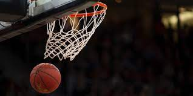
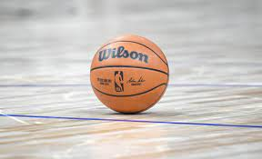

Video from the early days of basketball.The video is with a black and white format.The Harlem Gloutrobals are the people that play in the video.They are amazing because they do trickshots and amaze the crowd.Thats why the crowd is on its feet and is amazed and they are celebrating every made basket!The videos and the audio was found in this website CLICK HERE!
 